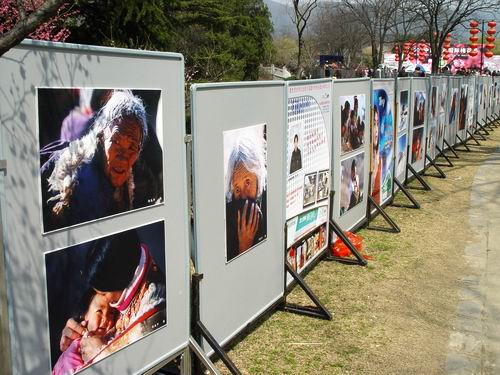

上海归来 @ Mar 28, 2005
从上海刚回到南京，有点儿疲惫。
不知道从什么时候开始上海街上的人变得那么多，有点儿影响心情哦。
回到南京的晚上，觉得这里安静空旷的象个小山村。


从上海刚回到南京，有点儿疲惫。
不知道从什么时候开始上海街上的人变得那么多，有点儿影响心情哦。
回到南京的晚上，觉得这里安静空旷的象个小山村。
“真没想到我和这种人也曾经拥有过，悲惨！败笔！”我友说道。估计现在悔得肠子都绿了。
在我看来男人为女人主动殷勤地做事，是有目的性的。这也是多年后才明白的道理，如果男人的目的没达到必然酸不溜湫无聊的庸俗样就出来了。60、70年代出生的男人为了女人还会去做点什么，80年代的一些小男生则认为天上的馅饼正好会掉进他的口中，这种不劳而获的心理普遍存在，因为自私自利惯了也随便惯了，不行就换一个女人试试，其余的一概和他无关。不过也有血气方刚的男人说：“吃饭要是让女人花钱，那我不成了面首了！”吃饭谁花钱倒也不象他说的那样，但现在要女人为他们撑着小伞的小男生还真不少，每每蹭点饭吃什么的都不算奇怪了。这类男人一般比较“二”，近而远知的比较好。
Grace说这两天香港电影节她定了很多动画片的票，日本的、世界集锦的。还从花展上买回6盆花全职养植。她的一个学动画的小妹妹心情最近不大好，她就写信安慰她：
“前一个礼拜，学校请一个美国女摄影师放她获奖的记录片China in the red。她连续3年（1997－2000）跟踪记录了中国底层社会的几个家庭的情况，在朱鎔基宣布“3年内成功完成国企改革的计划”之后。下岗工人、农民为主。和国内“焦点访谈”式的记录片不同的是她直言的真实：没有希望，只有每况愈下。看了之后，我很难平静，一连几天。和你一样不安，都因为看见了真相。
第一感觉是“逃吧，越远越好”，转念问：哪里又好了？好在在丑陋的真相外还有另外的希望。
我去看了香港一年一度的花展，没有带相机，只好用眼睛、鼻子、心来记忆每张可爱的脸，还带回来6位，一字排开放在我床边的窗台上，最高的是嫩黄瓣紫红芯的2株蝴蝶兰，开了7朵，还有8个花骨朵呢！还有几个矮个子：红顶仙人球，紫色发出醉人酒香的风信子，嫩朱红的小月季，有清晰表情的脸－－3色瑾，还有一盆不知名的，叶子变啊变啊就变成花的一位。我向她们做英语报告，她们怕是会烦心呢。等忙完这两天，我去查查养花的书去。第一次全职养花，不论如何要坚持到下个月栋来啊。香港的花市虽然贵，但花展却非常非常便宜，参观的每位没有不兴高采烈满载而归的，都是老婆婆老头头，都是普通人。
回想以前自己竟没种过花，甚至没这样的念头，就有的害怕。现在知道自己应该去找各种美好的事，坚定自己，才有能力把快乐带给家人。”
看了她写的文字觉得自己应该算是幸运的人，不过多少已经失去Grace的那种心境。想要不被环境改变是不是真的很难？她活得塌实而精彩，沉浸于自己的理想世界。
浓浓的女人气息，神经的每个末端都温暖着。
憧憬那一刻也能穿上这种淡紫色花纹的衣裙。
by Glen Dealtry
Canon 20D
[原文]之生也柔弱，其死也坚强。草木之生也柔脆，其死也枯槁。故坚强者死之徒，柔弱者生之徒。是以兵强则灭，木强则折，强大居下，柔弱居上。
[译文]人生之初柔弱似无骨，人到老年骨头僵硬坏死。草木生之时也柔弱到秋天也枯黄变硬。所以通过对事物的坚强、柔弱便可知它们的发展情况。兵将过于强大反而不能获胜，树木过于高大则预示着死亡。强大处于下方柔弱处于上方。
[天心悟语]老子从自然中得出规律，做事不求其极，才是发展之道。
[哲理小故事] 天心问：“柔弱为何能战胜刚强？”
老子答：“你看草木生之时和枯枝的区别便能理解这个道理。”
除了以天气开始的文字之外，还可以以音乐开始文字。
周末买了张CD《Songs about Jane》……
专辑《Songs About Jane》是Maroon5乐队与制作人MattWallace的心血结晶，专辑中兼容并蓄着摇滚力道、灵魂旋律以及朋克律动，主唱以表情丰富的声音在一首首描绘他前女友的歌曲中，深刻传达出他的心境转变过程。这张目前销售成绩已达白金唱片纪录的专辑，让喜欢流行、摇滚、R＆B、灵魂等各式曲风不同领域的歌迷听了都会大呼过瘾！
maroon 5 (魔力红、红星五、马龙老五)融合了红色的狂野魅力、神秘热情、奔放烈爱，再掺入摇滚力道、灵魂旋律及放克节奏，这样的红流泻着新灵魂乐性感风情的放克摇滚，这样的红在流行歌坛注入了一股新的颜色。
2003年，一首充满张力的摇滚劲曲“Harder to Breathe“悄悄地进占了全球各地的电台，这首挟带着戏剧性内容和唱腔而让人一听就上瘾的歌曲，，这支由5名加州大学以及纽约大学高材生组成的乐队进入全球的视野。
Maroon 5的成功决非一夕得来的侥幸，这两年来他们巡回全美在超过两百场的演唱会中表演，并为许多知名艺人暖场，这些现场演出让Maroon 5一点一滴地累积起人气，原本在2002年就已发行的“Harder To Breathe“因此开始口耳相传地慢慢走红，到了2003年夏天更成为歌迷的最爱之一，打入全美单曲榜第18名，而收录“Harder To Breathe“的专辑《Songs About Jane》也连带获得全美专辑榜第七名的佳绩。2004年由同一张专辑所选出的单曲“This Love“不但延续了“Harder To Breathe“的气势，还更上一层楼地获得全美单曲榜第五名，而Maroon 5在欧洲以及亚洲各国也都创下杰出的成绩，俨然已成为全球最受欢迎的团体之一。
Maroon5乐队获得了今年第47届格莱美最佳新人奖提名，并成为首个表演嘉宾，该乐队融合灵魂、疯克、摇滚的乐风在摇滚乐坛前所未见，被誉为“新灵魂乐界的第一摇滚乐队”。Maroon5乐队的主唱兼吉他手亚当·莱文就为格莱美揭幕一事表示：“那将是很酷的表演，我们准备演唱成名曲《烈爱》（ThisLove）。”
在格莱美颁奖典礼上，Maroon5一举得到了最佳新人大奖，他们的竞争对手包括诸如说唱艺人Kanye West和乡村歌手Gretchen Wilson等夺标热门。Maroon5成员之一Adam Levine对Kanye West充满了敬意，他表示：“能够击败West得到这么一个重要的奖项，我觉得这是一生当中最幸福的时刻，我简直难以相信这是真的。”
早早赶到梅花山，却见到一个赶庙会的场景。原来那个大草坪已经被黑压压的人群和各种游乐器具摆满，满世界的人、满世界的小摊子、满世界的方言...实在是恐怖！阳光灿烂的时刻只有梅花在一片浮躁声中恬静而自我的开放。



上午路考合格后我再也没有微笑的愿望，从心脏到心情萎靡起来。不知道是不是因为疲劳的缘故？回到办公室泡了一杯茉莉花茶，茉莉的芬芳沁人脾肺游离出一丝忧郁的感伤...没有心情继续下午的工作也不想和任何人说话，这种没有安全和归属的感受究竟和什么有关？
什么是对欲望的诗意描述？什么是一个长梦里没有被忘记的段落？
傍晚的时候听见同事说外面下雪了，很细密的雪花将天色染得白朦朦一片。听说台湾有个地方遭遇了百年不遇的暴雪，弄得当地人人心惶惶。
有个电视节目里曾经谈到男人应该记住太太的三个日子：生日、第一次约会的日子和结婚纪念日。我们不同的意见则是：生日、结婚纪念日和排卵日。
这周的最后一天还是很忙，忙着忙着就忘了时间的存在，也忘记了唧唧歪歪去多愁善感。公司局域网上的《悲伤恋歌》已经下载了16集，金喜善韩国第一美女的称号已经随着她的年龄增大而衰落，女人的青春如新鲜的水果一样水润，可枯萎起来也很快。韩剧爱情真是折磨人的东西，一旦沾染上怎么都脱身不了。